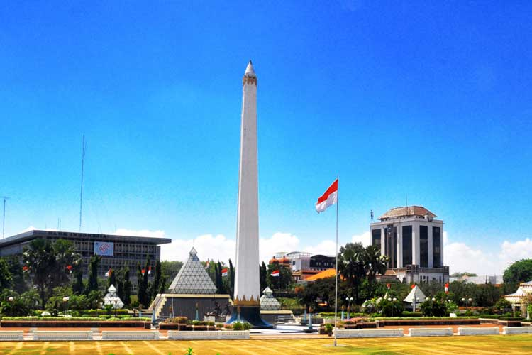
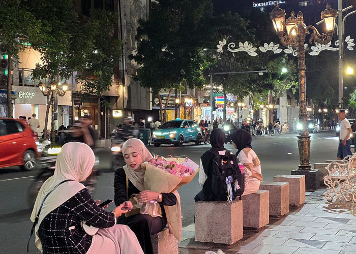

Tourist Places
Explore the best of Surabaya

Mall
Yes, that's true. Mall is also a must tourist spot.
Malls are a well-known attraction for locals. Because of Surabaya's hot climate, many people prefer spending time at a mall — shopping, dining, and entertainment all under one roof. Popular choices include Pakuwon Mall, Tunjungan Plaza, and Galaxy Mall.
Malls are a well-known attraction for locals. Because of Surabaya's hot climate, many people prefer spending time at a mall. The malls are also a great place to hang out with friends and family. Some of the most popular malls in Surabaya are:
- Pakuwon Mall
- Tunjungan Plaza
- Galaxy Mall

Kota Tua
Step back in time — Kota Tua is Surabaya's living history.
Kota Tua Surabaya is a historic area where visitors can explore old colonial and Chinese-style buildings, heritage streets, museums, and important landmarks. It reflects Surabaya's diverse history and trading culture across European, Chinatown, Arab, and Malay heritage zones.
Kota Tua Surabaya is a historic area where visitors can explore old colonial and Chinese-style buildings, heritage streets, museums, and important landmarks. It is divided into several heritage zones, including European, Chinatown, Arab, and Malay areas, reflecting Surabaya's diverse history and trading culture.

Tugu Pahlawan
A monument of courage — the heart of Surabaya's identity.
Tugu Pahlawan (Heroes Monument) is one of Surabaya's most famous landmarks, built to commemorate the heroes who fought in the Battle of Surabaya in 1945. The 41-metre monument stands in a large open park surrounded by a museum. Visitors can learn about history, take photos, and enjoy the peaceful park.
Tugu Pahlawan (Heroes Monument) is one of Surabaya's most famous landmarks, built to commemorate the heroes who fought in the Battle of Surabaya in 1945. The 41-meter-high monument stands in a large open park and is surrounded by historical exhibits and a museum. Visitors can learn about Surabaya's independence history, explore the museum, take photos, and enjoy the surrounding park.

Jalan Tunjungan
The street that never sleeps — Surabaya's vibrant city soul.
Jalan Tunjungan is a famous shopping street in Surabaya, known for its variety of shops, restaurants, and entertainment options. It is a popular destination for both locals and tourists looking to experience the vibrant atmosphere of the city.
Jalan Tunjungan is a famous shopping street in Surabaya, known for its variety of shops, restaurants, and entertainment options. It is a popular destination for both locals and tourists looking to experience the vibrant atmosphere of the city.

Surabaya City
The City of Heroes — where history meets modern spirit.
Surabaya is the capital city of East Java and Indonesia's second-largest city. Known as the City of Heroes, it blends modern city life with a rich historical past. From the iconic Suro and Boyo statue to its vibrant waterfront and culinary scene, Surabaya has something special for every visitor.
Surabaya is the capital city of East Java and Indonesia's second-largest city. Known as the City of Heroes, it blends modern city life with a rich historical past. From the iconic Suro and Boyo statue to its vibrant waterfront and culinary scene, Surabaya has something special for every visitor.